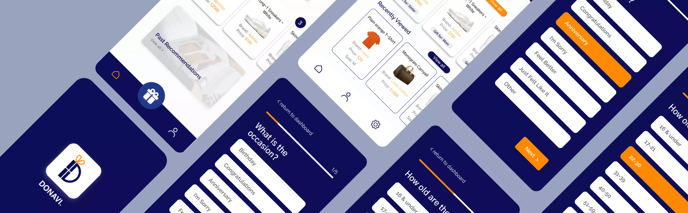
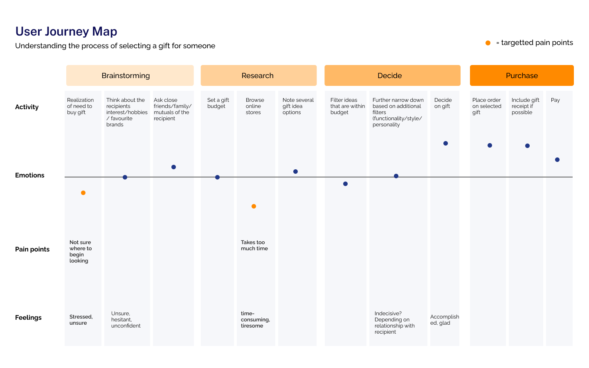

Building a gift recommending business
DONAVI
Role
Designer
Duration
May - August 2021
Tools
Figma, Photoshop
Project type
UX research, UX design
Brief
Over the summer, I was fortunate enough to be a part of University of Toronto's Hatchery program NEST. The Hatchery is a program that offers resources and opportunity to launch or further develop startups.
My team and I were looking to build a business based on our idea of recommending gifts to people. The idea of Donavi came about when we realised that looking for gifts can be extremely time consuming.
With so many websites out there to choose from, the options for gifts are endless. We wanted to simplify the process for those that are looking for a fast and easy way to select the perfect gift.
The team
I worked alongside 5 people to create this product. We were a group of students from different educational backgrounds who came together for this project.
Initial Problem Discovery
The initial idea was discovered when we realized while looking for a gift for one of our friends, there was a lot of back and forth unsureness when it came to figuring out what to get and that it can be quite difficult to think of a gift idea on the spot. Usually when I think about getting a gift for someone, it can take days because there are so many shopping brands online with a bunch of products that it just gets overwhelming and time consuming to choose something.
Problem Statement
After spending some time contemplating about what the big problem was, I came up with this problem statement that defined what our goal was
User Research
We wanted to first validate our product by conducting user interviews and surveys to gather a wide range of data such as determining who our target demographic is and what people thought was the most frustrating part of gifting. Collectively as a team, we gathered over 200 responses of primary research data. Here were some of the findings:
Interviews
We asked users open ended questions to get a better understanding of what their process was like finding a gift for someone. Based on the responses of particpants, we created a survey to help provide more quantitative data to support our theoretical idea of what the gifting journey is like
Survey Data
From our interviews and survey results combined we gathered three key points:
-
61% of people who find browsing online stores for options/doing research the hardest thing about gifting finds gifting difficult overall.
-
75% of users found that there was choice and information overload in shopping because there are so many brands and products in the fashion industry
-
50% of surveyors think that gifting takes too much time
User Journey Map
To better visualize the user journey of purchasng a gift, I created a user journey map to present to mentors and the team. Based on our research, I outlined the two main areas that people found to have the most frustration in.
I then thought about creating another journey map as a point of comparison of what the customer journey of our platform might look like and how it will tackle the pain points of the gift giving journey.

Target Audience
Through research, we also gained a better perspective of who our main user group would be. We found that the group with the most difficulty with finding a gift were men aged 25-35 years of age. Taking what I learnt from research, I put together what I imagined to be our target audience in a persona to make it easily relatable to people and also easier to empathize with the user.
Design Process
Design goals
- To ease the process of choosing gifts so users are not overwhelmed with gift options
- Ensure the responsiveness of the web app across Android, IOS and other mobile platforms
- Build a user-friendly interface that users will find efficient in achieving their goal of finding a gift for the recipient
The first thing I did was discuss with the team the most necessary features we would need to include on our platform for our MVP. I took our main features and then created a site map of the product so I know what screens I would need to design.

Design Palette
I created a design guide that would help with consistency designing across screens.
Wireframes
Following the customer flow chart, I iterated the basic layout and organization for each page indicating how users should interact at each action button or layout and how the application will respond.
Mockups
Once the layout was settled on, I started working on creating a high fidelity of the app to showcase our pitch to stakeholders. These mockups provided a visuals for our developors and the investors we were going to present to.
Final Prototype
In our final solution we wanted to emphasize the three main steps for our recommendation:
Enter Basic Information
Users enter basic information about their recipient such as the gift occasion, relationship, gender, price range and age.

Information about the gift recipient's personality and interests
We added a couple of fun questions to help get a better understanding of the type of products the gift recipient may like.
See the recommendation
The user can then click see recommendation and a list of 5 products will show up. If they like the recommendation, they can click on the product and be directed to the site to buy the product.
Presentation / Pitch
Throughout the summer, to prep for demo day, startups woud have to pitch their idea to a judging panel for critique. I had the opportunity to present to the panel for 2 of the four pitches. These practice pitches helped us get feedback on content and delivery of our pitch so that it will continually improve. Below is a video of how our most recent pitch went.
Takeaways
The Hatchery NEST program was an eye-opening experience into learning more about entrepreneurship and what it takes to create a successful startup. Unfortunately, our team wasn’t able to make it to the final Demo Day pitch, we’ve taken away a lot of skills and will continue to work on building out this project as it is still in its early stages. As the sole UX designer on the team, I was able to make a lot of the design decisions and have a lot of creative freedom. Since we were a small team, we were able to experience areas of expertise outside our own interests. Along with designing the user interface and flow of the web platform, I also had the opportunity to pitch, conduct market research and create graphics.
Here were some of the takeaways from this project:
-
Newfound knowledge about building a startup, entrepreneurship and understanding the product cycle from beginning to end.
-
Importance of identifying a clear problem and target market
Coming into the program, our team had a clear idea of what we wanted to create. However, in the beginning stages of our time at NEST, our mentors suggested we re-evaluate our problem and who our target audience is. Our team spent a lot of time conducting primary and secondary research to back up our problem statement which was eventually refined and reciprocated well with the panel of judges when we pitched.
-
Being adaptive and a team-player
b. Being in a start up environment had its ups and downs. Our team faced a lot of critique with our product idea which in return affected the team’s spirits. As a result, nobody was willing to take the initiative to pitch for the last two pitches. I hadn’t planned on presenting our pitches but I offered to take charge and pitch on behalf of the team. I also had to remake the slide decks, design the graphics as presentation prep as well. This experience had taught me to be a better presenter but also to be adaptive in a team environment.